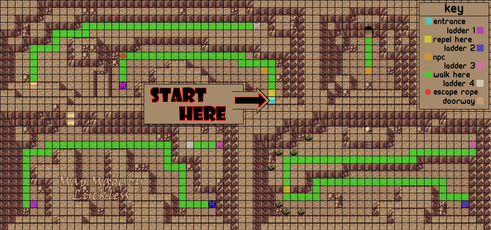

Rusturf Tunnel
Before entering the grass on Route 116, menu:
- Use a repel.
- Teach Rock Tomb to Mudkip over Growl
You'll want to grab the item next the the bug catcher. That repel will come in handy if you get an early encounter abra and want to repel through Granite Cave. Dodge all trainers leading up to Hiker Clark and fight him for the extra experience - all 3 Geodudes die to Water Gun. If at any point during the run up to now you picked up a rare candy, use it now. head into the Whismur tunnel and fight:
Team Aqua Grunt 2
Much easier than last time. If you're in Torrent range (less than 1/3 HP), go for the KO with water gun. If you can't KO it, it's attacks do almost nothing to you; the worst thing it can do is Sand Attack again.
Use a repel on the way back and dodge all of the trainers on the way back to Rustboro. IF YOU FOUGHT BUG CATCHER LYLE: on your way back through Rustboro, quickly stop at the shop and make some purchases:
| Item | Quantity |
|---|---|
| X attack | 2 |
On your way out of Rustboro, you should ignore all the trainers again and head for Briney's house. Lady Cindy is an optional trainer here who gives a bit more experience and a decent money yield, but if you fought Clark earlier you shouldn't need to fight her. Passively search the route 104 grass for Flyers before getting a ride from Mr. Briney. Prepare...
Granite Cave
Easily the most frustrating part of the entire run. Hoenn is rather complex as far as regions go, and a teleporter will save a ton of time, no questions asked. You must bet on getting at least decent Abra luck here. Here's the breakdown.
- Abra is a 10% encounter rate on every floor of Granite Cave.
- As it teleports on the first turn, you will need to throw one of your two great balls at it at full health. The probability of successful capture is slightly less than 40%
- Good luck. There is no way around just hunting for these Abras and potentially losing runs to them. You may generally proceed if you found your Abra before you would naturally leave the cave. Any longer than this is unnecessarily wasted time. You have a 4th repel for those especially fortunate situations when you do quickly find an Abra.
- Pick up the escape rope here, and remember your way around. You are negotiating the cave without Flash.
- You'll run into a lot of encounters that you can kill with Water Gun - Arons and Geodudes, and also Makuhitas if you're still holding Torrent. If you didn't take a lot of damage against Roxanne, you can also fight sableyes. You need to be at mid to low health going into Rival 2 and sableye does 11-14 with night shade (they also give you a lot of experience). It is recommended to take the time to kill these encounters to get Marshtomp before the upcoming fights, because it makes them a lot safer and faster. If you're Level 16 leaving this cave, the experience will line up just right for you to be Level 18 for Rival 2's Grovyle (providing you fight Laura now), which helps a lot in hitting the damage ranges you need.
- When you evolve, teach Mud Shot over Mud Slap.
After delivering the letter to Steven, leave the cave on by rope if you have an Abra, by foot if you don't. Either just before or just after your trip through Granite Cave, pick up the hidden Stardust inside the northernmost of the single rocks you can see here - it sells for a lot of money. Be careful to dodge the line of sight of the Fisherman who stands nearby. We delay Brawly here; we don't need flash and the fight is faster later. However, the single compulsory trainer in his gym should be fought now for experience.
Battle Girl Laura
This Meditite doesn't do much, other than stalling for time with detect. Providing you got Marshtomp in Granite Cave, you should hit it with a Mud Shot to take most of its health then finish it off with whatever is necessary. If you're still Mudkip, you can either skip this fight for now, or try to get by with Rock Tomb and Tackle.
Slateport
Now that you're done in Dewford for the time being, sail off to Slateport. You want three items here - the hidden Revive which is to your left as you enter, the hidden Ether (optional) on the right hand side of the beach, and the Soft Sand that a non-trainer Tuber will give you if you talk to her. Once you've got all three, head north into the main city. Be sure to talk to Dock first, then head for the Museum. This assumes you're Marshtomp before these fights, The Aquas will give you a hard time here if you are still Mudkip. Go to the top floor and talk to Stern from the left.
Team Aqua Grunt 3/4
- If you're Marshtomp, this sequence is simple. A single Mud Shot for each of the two Carvanhas and a Rock Tomb for the Zubat will do the job, but you could be trolled a little by accuracy.
- Mudkip has a harder time of it, since he's limited to Rock Tomb. Each Carvanha takes 2 Rock Tombs to KO, while a Zubat takes one. What's more, Carvanha 2KOs you with bite if it decides to use it. (.8)^5 = .327, so you have a little less than 1/3 of a chance to hit with all 5 of your rock tombs.
- Attempt to end the fight with at least 1/3 of your health gone. Keeping a regular potion in reserve can be useful for a situation like this.
Once you're done, you should talk to the Aqua that remains. He will give you TM46 Thief, worth 1500 Pokedollars. Now make a stop at the mart in this city.
Shop 2
sell
- TMs for Bullet Seed, Steel Wing, & Thief
- Stardust
Buy
- A few more repels. If you already have a flier, you need 4 from this point onwards, otherwise only 3. But you might also still have a Repel left over depending on how Granite Cave went, so adjust your purchase appropriately.
- 8 Super Potions.
Move up through route 110, and use a repel and equip softsand. Pokefan Isabelle can be dodged by hugging the opposite wall as closely as possible.
Rival 2
Rival 2 gets his/her own section here. It isn't unheard of to take a safety save here, especially in a race or marathon, but after a few runs, you'll have an intuitive sense of how this fight goes.
- First things first, it is strongly advised to enter this fight with Marshtomp below 2/3 health. Anywhere between 14 and 35 HP is considered relatively safe. The reason for this is the Wailmer that May leads with will not use growl if you are below a certain HP. Any lower than 14 and you risk dying to a water gun (depending on your special defense). If you have any left over orans or potions, you can use them beforehand to put yourself safely within this range. However, this strategy does make the nuances of this fight a bit more tricky, as in order to avoid dying, you might be required to heal before you have finished setting up. This will all depend on if Wailmer decides to water gun or splash (Wailmer can also use rollout if you are at very low health and it thinks it will kill you. Wailmer can be very deadly if locked into rollout; think about it).
- So, on the Wailmer we must set up 1 X speed and 2 X attacks. Fit these in however you deem safe and once you are fully set up, KO the Wailmer with a tackle and a mudshot in that order. BUT, before you dispatch Wailmer, you must be at about 44 health or above.
- Once Wailmer is out of the picture, you face the real choke point of the battle: Grovyle. The safest and most consistent way to kill Grovyle is to be at level 18 and holding the soft sand. This allows you to 2 KO with mud shot (this can still not kill if you have bad damage rolls, but that is relatively rare). Note that if your attack is bad or you do have a bad first roll, you can opt to go for a second turn rock tomb, which will do slightly more damage but is less accurate. Also, if you entered Grovyle with mid 40s HP his first absorb will put you at pretty low health. Don't panic, just think this through: if your health is below 1/8 the AI is designed to use quick attack. Notice how I said "below" 1/8. Once I had 7 out of 56 health and I mistakenly predicted a quick attack, only to receive a face full of absorb and lose the fight. If you are in red health, that does not mean he will quick attack; do the math.
- EXAMPLE of a standard Grovyle fight: You enter Grovyle having set up 2 X attacks and 1 X speed, at level 18, and with 44 or above HP. First turn Grovyle out-speeds you and uses absorb, putting you at 10-16 HP. You use mud shot and do a little more than half its health and lower its speed. Second turn you out-speed and kill it with another mud shot. Easy-Peasy.
- If any of your mud shots miss you're in for a bad time. The fight might still be salvageable, so use your revive wisely.
- Then, for an anti-climactic end to a very intricate and intense fight, water gun the Numel.